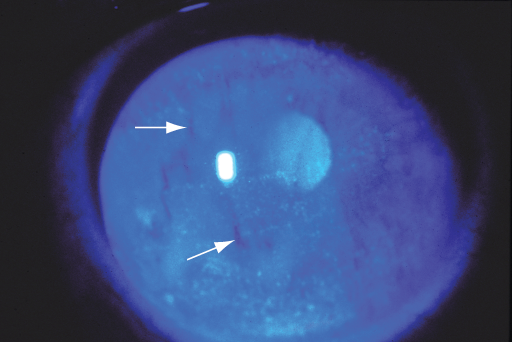
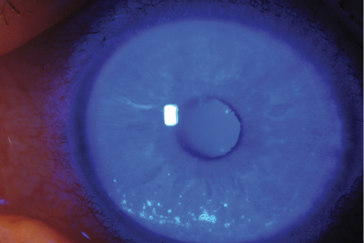
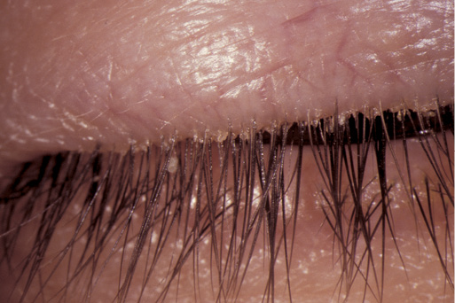
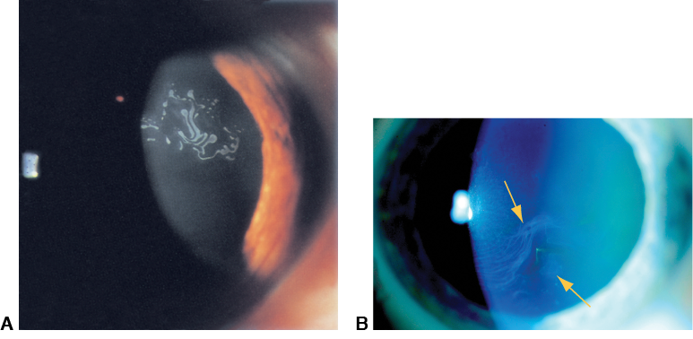
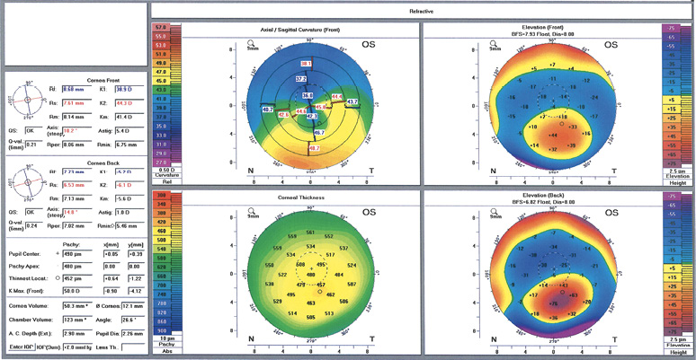
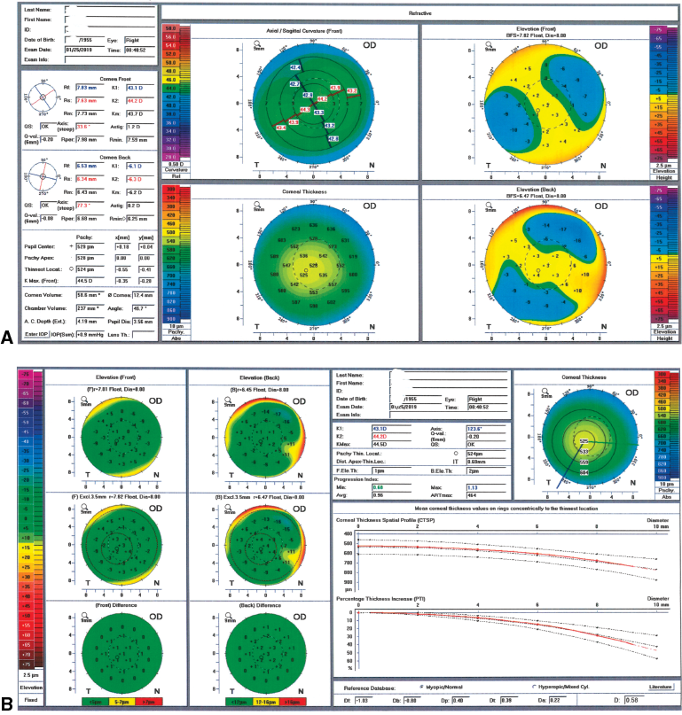
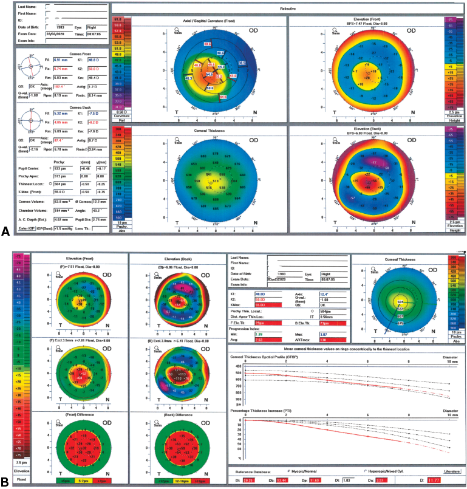

Chapter 2
Patient Evaluation
Highlights
Aspects of Patient Evaluation
The preoperative patient evaluation is arguably the most critical component in achieving successful outcomes after refractive surgery. It is during this encounter that the surgeon develops an impression as to whether the patient is a good candidate for refractive surgery. Perhaps the most important goal of this evaluation, however, is to identify who should not have refractive surgery.
The evaluation actually begins before the physician sees the potential patient. Technicians or refractive surgical coordinators who interact with the individual may get a sense of his or her goals for refractive surgery. If the patient’s interaction with staff is problematic or the technician has the impression that a patient may have unrealistic expectations, the surgeon should be informed. Such a patient may not be a good candidate for surgery.
Important parts of the preoperative refractive surgery evaluation include an assessment of the patient’s expectations; the social, medical, and ocular history; manifest and cycloplegic refractions; a complete ophthalmic evaluation, including slit-lamp and dilated fundus examinations; and ancillary testing (Table 2-1). Because accurate test results are crucial to the success of refractive surgery, the surgeon must closely supervise office staff members who are performing the examination and ancillary testing during the preoperative evaluation and confirm that the instruments used are properly calibrated. If the patient is deemed to be a good candidate for surgery, the surgeon should discuss the benefits, risks, and alternatives with the patient as part of the informed consent process (see the section Discussion of Findings and Informed Consent later in this chapter).
Patient Expectations
One of the most important aspects of the evaluation process is assessing the patient’s expectations. Unrealistic expectations are probably the leading cause of patient dissatisfaction after refractive surgery. The results may be exactly what the surgeon expected, but if those expectations were not conveyed adequately to the patient before surgery, the patient may be disappointed.
The surgeon should explore expectations relating to both the refractive result and the emotional result (eg, improved self-esteem). Patients need to understand that the refractive surgery will not necessarily improve their corrected distance visual acuity (CDVA). In addition, they need to realize that the surgery will not alter the course of eventual presbyopia, nor will it prevent potential future ocular problems such as cataract, glaucoma, or retinal detachment. If the patient has clearly unrealistic goals, such as a guarantee of 20/20 uncorrected distance visual acuity (UDVA) or perfect uncorrected reading and distance vision despite presbyopia, the patient may need to be told that refractive surgery cannot currently fulfill his or her needs. The refractive surgeon should exclude such patients.
Social History
An accurate social and occupational history can uncover specific visual requirements of the patient’s profession. Various occupations have differing visual needs. For example, it may be more important for an accountant to see numbers clearly on a computer screen than to have perfect UDVA. Others, such as military personnel, firefighters, or police officers, may have restrictions on minimum UDVA and CDVA and on the type of refractive surgery allowed. Knowledge of a patient’s recreational activities may also help the surgeon to select the most appropriate refractive procedure or to determine whether that patient is even a good candidate for refractive surgery. For example, a surface laser procedure may be preferable to a lamellar procedure for a patient who is active and at high risk of ocular trauma. Someone with highly myopic and presbyopic vision who is used to examining objects a few inches from the eyes without the use of glasses (eg, a jeweler or stamp collector) may be dissatisfied with postoperative emmetropia.
Occupational or social factors unrelated to refractive status may also be relevant. Health care workers, for instance, may unknowingly be colonized with methicillin-resistant Staphylococcus aureus; appropriate prophylaxis may include the use of topical antibiotic drops such as polymyxin/trimethoprim. In addition, tobacco and alcohol use should be documented for all patients.
Solomon R, Donnenfeld ED, Holland EJ, et al. Microbial keratitis trends following refractive surgery: results of the ASCRS infectious keratitis survey and comparisons with prior ASCRS surveys of infectious keratitis following keratorefractive procedures. J Cataract Refract Surg. 2011;37(7):1343–1350.
Medical History
The medical history should include systemic conditions, previous surgical procedures, and current and prior medications. Certain systemic disorders, such as connective tissue disease or diabetes mellitus, can lead to poor healing after refractive surgery. An immunocompromised state—for example, from cancer or HIV infection and AIDS—can increase the risk of infection after refractive surgery (see Chapter 7). Medications that affect healing or the ability to fight infection, such as systemic corticosteroids or chemotherapy drugs, should be specifically noted. The use of corticosteroids increases the risk of cataract development, which could compromise the long-term postoperative visual outcome. Certain medications—including isotretinoin, amiodarone, and sumatriptan—have traditionally been thought to increase the risk of poor corneal healing or epithelial defects following photorefractive keratectomy (PRK) and laser in situ keratomileusis (LASIK), but there is no evidence for this association in the peer-reviewed literature. However, previous or current use of isotretinoin can damage the meibomian glands and predispose a patient to dry eye symptoms postoperatively.
Although laser manufacturers do not recommend excimer laser surgery for patients with cardiac pacemakers and implanted defibrillators, many such patients have undergone the surgery without problems. It may be advisable to check with the pacemaker and defibrillator manufacturer before laser surgery. Refractive surgery is also generally contraindicated in pregnant and breastfeeding women because of possible changes in refraction and corneal hydration status. Although newer studies have shown that minimal refractive changes occur during pregnancy, caution is warranted. Many surgeons recommend waiting at least 3 months after delivery and cessation of breastfeeding before performing the refractive surgery evaluation and procedure.
Hardten DR, Hira NK, Lombardo AJ. Triptans and the incidence of epithelial defects during laser in situ keratomileusis. J Refract Surg. 2005;21(1):72–76.
Kanellopoulos AJ, Vingopoulos F. Does pregnancy affect refractive and corneal stability or corneal epithelial remodeling after myopic LASIK? J Refract Surg. 2020;36(2):118–122.
Schallhorn JM, Schallhorn SC, Hettinger KA, et al. Outcomes and complications of excimer laser surgery in patients with collagen vascular and other immune-mediated inflammatory diseases. J Cataract Refract Surg. 2016;42(12):1742–1752.
Ocular History
The ocular history should focus on previous and current eye problems, such as dry eye symptoms, lagophthalmos, blepharitis, recurrent corneal erosions, glaucoma, and retinal tears or detachments, as well as use of ocular medications. A history of strabismus, amblyopia, or diplopia should be documented. In addition, potentially recurrent conditions, such as ocular herpes simplex virus infection, should be recognized so that preventive measures can be instituted. Prior ocular surgical procedures, such as radial keratotomy or penetrating keratoplasty, may affect clinical decision making in refractive surgery. A personal or family history of keratoconus may exclude a patient from consideration for traditional LASIK or PRK, although other refractive procedures (eg, crosslinking or intrastromal corneal ring segments) may be appropriate.
The patient’s history of optical correction with glasses or contact lenses should be noted. The stability of the current refraction is a very important consideration. A change in prescription for glasses or contact lenses of more than 0.50 D in either sphere or cylinder, or a change in cylinder axis of more than 10 degrees, within the past year is thought to be significant. Information on contact lens wear should be recorded, including the type of lenses (soft or rigid gas-permeable [RGP]), the wearing schedule (daily wear or overnight), the cleaning and disinfecting agents used, and the age of the lenses.
Because contact lens wear can change the shape of the cornea (corneal warpage), it is recommended that patients stop using contact lenses before the refractive surgery evaluation as well as before the surgery. The exact length of time has not been established, but current clinical practice typically involves discontinuation of soft contact lenses for at least 3 days to 2 weeks (toric lenses may require longer) and of RGP lenses for at least 2–3 weeks. However, it may take months for the corneal curvature to return to normal in some long-term RGP lens wearers, and some surgeons keep patients out of rigid contact lenses for 1 month for every decade of contact lens wear. Before being considered for refractive surgery, patients with irregular or unstable corneas should discontinue their use of contact lenses for a longer period and then be reevaluated every few weeks until the refraction and corneal topography stabilize. For patients who wear RGP contact lenses and find glasses a hardship, some surgeons suggest changing to soft contact lenses for a period to aid stabilization and regularization of the corneal curvature.
Bower KS, Woreta F. Update on contraindications for laser-assisted in situ keratomileusis and photorefractive keratectomy. Curr Opin Ophthalmol. 2014;25(4):251–257.
de Rojas Silva V, Rodríguez-Conde R, Cobo-Soriano R, Beltrán J, Llovet F, Baviera J. Laser in situ keratomileusis in patients with a history of ocular herpes. J Cataract Refract Surg. 2007;33(11):1855–1859.
Patient Age, Presbyopia, and Monovision
The patient’s age is a consideration in predicting postoperative patient satisfaction. The loss of near vision with aging should be discussed with all patients. Before 40 years of age, individuals with emmetropia generally do not require reading adds to see a near target. After this age, patients need to understand that if their eyes are made emmetropic through refractive surgery, they will require reading glasses for near vision. They must also understand that “near vision” tasks include all tasks performed up close, such as applying makeup, shaving, or seeing the computer or cell phone screen—not just reading. These points cannot be overemphasized for patients with myopia who are approaching 40 years of age. Before refractive surgery, these patients can read well with and without their glasses; some may even read well with their contact lenses. If their eyes are made emmetropic after surgery, many will not read well without reading glasses. The patient needs to understand this phenomenon and must be willing to accept this result before undergoing any refractive surgery that aims for emmetropia. In patients who wear glasses, a trial with contact lenses will simulate vision following refractive surgery and approximate the patient’s reading ability after surgery.
A discussion of monovision (1 eye corrected for distance and the other eye for near/intermediate vision) often fits well into the evaluation at this point (see sidebar: Advantages and Disadvantages of Monovision). The monovision option should be discussed with all patients in the age groups approaching or affected by presbyopia. Many patients have successfully used monovision in contact lenses and want it after refractive surgery. Others have never tried it but would like to, and still others have no interest. If a patient has not used monovision before but is interested, the intended surgical result can first be demonstrated with glasses or temporary contact lenses at near and distance. Generally, the dominant eye is corrected for distance, and the nondominant eye is corrected to approximately –1.25 to –1.75 D. For most patients, such refraction allows good uncorrected distance and near vision without intolerable anisometropia. Some surgeons prefer a “mini-monovision” procedure, whereby the near-vision eye is corrected to approximately –0.75 D, which allows some near vision with better distance vision and less anisometropia. The exact amount of monovision depends on the desires of the patient. Blended vision would entail correction to achieve myopia in the range of –1.00 D to –1.50 D. Higher amounts of monovision (up to –2.50 D) can be used successfully in selected patients who want excellent postoperative near vision. However, in some patients with a higher degree of postoperative myopia, improving near vision may lead to unwanted adverse effects of loss of depth perception and anisometropia. It is advisable to have a patient simulate monovision with contact lenses before surgery (generally about 5 days to 1 week, but practices are variable) to ensure that distance and near vision and stereovision are acceptable and that no muscle imbalance is present, especially with higher degrees of monovision.
Although typically the nondominant eye is corrected for near, some patients prefer to have the dominant eye corrected for near. Of several methods for testing ocular dominance, one of the simplest is to have the patient point to a distant object, such as a small letter on an eye chart, with both eyes open and then close each eye to see which remains aligned better; this is the dominant eye. (Alternatively, the patient can make an “OK sign” with 1 hand and look at the examiner through the opening while closing each eye in turn.)
Durrie DS. The effect of different monovision contact lens powers on the visual function of emmetropic presbyopic patients (an American Ophthalmological Society thesis). Trans Am Ophthalmol Soc. 2006;104:366–401.
Examination
Uncorrected Visual Acuity, Manifest Refraction, and Cycloplegic Refraction
The refractive elements of the preoperative examination are extremely critical because they directly determine the amount of surgery to be performed. Visual acuity at distance and near should be measured. The current glasses prescription and visual acuity with those glasses should also be determined, and a manifest refraction should be performed. The sharpest visual acuity with the least amount of minus should be the endpoint. The duochrome test should not be used as the endpoint because it tends to overminus patients. The best visual acuity obtainable should be documented, even if it is better than 20/20. An automated refraction with an autorefractor or wavefront aberrometer may be useful in providing a starting point for the manifest refraction.
A cycloplegic refraction is helpful to account for and measure latent hyperopia. Sufficient waiting time must be allowed between administration of the cycloplegic eyedrops and measurement of the refraction. Tropicamide 1% or cyclopentolate 1% are the most commonly used cycloplegic drops. For full cycloplegia, waiting at least 30 minutes (with tropicamide 1%) or 60 minutes (with cyclopentolate 1%) is recommended. The cycloplegic refraction should refine the sphere, but not the cylinder, from the manifest refraction, as it is done to neutralize accommodation. For eyes with a refractive error of more than 5.00 D, a vertex distance measurement is necessary to obtain the most accurate refraction.
When the difference between the manifest and cycloplegic refractions is greater than 0.50 D, a postcycloplegic manifest refraction may be helpful to recheck the original. In patients with myopia, such a large difference is often caused by an overminused manifest refraction. In patients with hyperopia, substantial latent hyperopia may be present, in which case the surgeon and patient need to decide exactly how much hyperopia to treat. If there is significant latent hyperopia, a pushed-plus spectacle or contact lens correction can be worn preoperatively to reduce the postoperative adjustment that may result from treating the true refraction.
Pupillary Examination
After the manifest refraction (but before dilating eyedrops are administered), the external and anterior segment examinations are performed. Specific attention should be given to the pupillary examination. The pupil size should be evaluated in bright room light and in dim illumination, and the surgeon should look for an afferent pupillary defect. Various techniques are available for measuring pupil size in low-light conditions, including use of a near card with pupil sizes on the edge (with the patient fixating at distance) or a pupillometer. The dim-light measurement should be taken using an amount of light that closely approximates the amount that enters the eye during normal nighttime activities, such as night driving, and not necessarily in completely dark conditions.
Pupil measurements should be standardized as much as possible. Measuring the scotopic pupil diameter preoperatively and using that measurement to direct surgery remains a controversial approach. Conventional wisdom suggests that the optical zone should be larger than the pupil diameter to minimize visual disturbances such as glare and halos. However, current evidence does not support an association between preoperative pupil size and an increased incidence of either glare or halo concerns 1 year postoperatively. It is not clear, therefore, that pupil size can be used to predict which patients are more likely to have such symptoms. However, a thorough and documented discussion with the patient is required. The size of the effective optical zone—which is related to the ablation profile and the level of refractive error—may be more important in minimizing visual adverse effects than is the scotopic pupil diameter.
When asked, patients often note that they had glare in dim-light conditions even before undergoing refractive surgery. Thus, it is helpful for patients to become aware of their glare and halo symptoms preoperatively, as this knowledge may minimize postoperative concerns or misunderstanding.
Chan A, Manche EE. Effect of preoperative pupil size on quality of vision after wavefront-guided LASIK. Ophthalmology. 2011;118(4):736–741.
Edwards JD, Burka JM, Bower KS, Stutzman RD, Sediq DA, Rabin JC. Effect of brimonidine tartrate 0.15% on night-vision difficulty and contrast testing after refractive surgery. J Cataract Refract Surg. 2008;34(9):1538–1541.
Myung D, Schallhorn S, Manche EE. Pupil size and LASIK: a review. J Refract Surg. 2013;29(11):734–741.
Pop M, Payette Y. Risk factors for night vision complaints after LASIK for myopia. Ophthalmology. 2004;111(1):3–10.
Schallhorn SC, Kaupp SE, Tanzer DJ, Tidwell J, Laurent J, Bourque LB. Pupil size and quality of vision after LASIK. Ophthalmology. 2003;110(8):1606–1614.
Schmidt GW, Yoon M, McGwin G, Lee PP, McLeod SD. Evaluation of the relationship between ablation diameter, pupil size, and visual function with vision-specific quality-of-life measures after laser in situ keratomileusis. Arch Ophthalmol. 2007;125(8):1037–1042.
Ocular Motility and Confrontation Visual Fields
Ocular motility should be carefully evaluated before surgery. In patients with asymptomatic tropia or phoria, symptoms may develop after refractive surgery if the change in refraction leads to a breakdown in ocular alignment. If there is a history of strabismus (see Chapter 7) or a concern about postoperative ocular alignment, a trial with contact lenses can be considered before surgery. Monovision may not be appropriate for such patients, as binocular summation and fusion may be compromised. A sensory motor evaluation can be obtained preoperatively if strabismus is an issue. Confrontation visual field tests are generally performed as part of the basic ophthalmic examination.
Intraocular Pressure
The intraocular pressure (IOP) should be checked after the manifest refraction is completed and corneal topography measurements are taken. A history of glaucoma is noteworthy because IOP can be dramatically elevated in some refractive surgical procedures, potentially exacerbating preexisting optic nerve damage (see Chapter 7). Also, topical corticosteroids are used after most refractive surgery procedures and, after a surface ablation procedure, may be continued for months. Long-term use of topical corticosteroids may cause marked elevation of IOP in corticosteroid responders.
Ahmad M, Chocron I, Shrivastava A. Considerations for refractive surgery in the glaucoma patient. Curr Opin Ophthalmol. 2017;28(4):310–315.
Slit-Lamp Examination
A complete slit-lamp examination of the eyelids and anterior segment is necessary. The cornea and conjunctiva are examined specifically for scarring, conjunctivochalasis, pterygium, and chemosis. These abnormalities may cause problems in achieving good suction, whether using a microkeratome or docking with a femtosecond laser. Corneal scars have been associated with vertical gas breakthrough when a femtosecond laser is used to create LASIK flaps. The cornea is evaluated for surface abnormalities such as decreased tear breakup time (Fig 2-1) and punctate epithelial erosions (Fig 2-2). Significant blepharitis (Fig 2-3), meibomitis, and dry eye syndrome can be addressed before refractive surgery, as they are associated with increased postoperative discomfort and decreased vision; and dry eye symptoms frequently worsen postoperatively.
A careful examination for epithelial basement membrane dystrophy (EBMD; Fig 2-4) is required because its presence increases the risk of flap complications during LASIK. Thus, patients with EBMD may be better candidates for surface ablation not only because of possible LASIK flap complications but also because removal of the abnormal epithelium may be palliative. Signs of keratoconus, such as iron rings and corneal thinning or steepening, may also be found. Keratoconus is typically a contraindication to incisional or ablative refractive surgery (see Chapter 7). The endothelium should be examined carefully for signs of cornea guttata and other dystrophies. Poor visual results have been reported in patients with cornea guttata and a family history of Fuchs dystrophy. Corneal edema is generally considered a contraindication to refractive surgery. The deposits of granular and Avellino corneal dystrophies may increase substantially in size and number in the flap interface after LASIK, resulting in poor vision.
Evaluation of the anterior chamber, iris, and crystalline lens completes the slit-lamp examination. A shallow anterior chamber may be a contraindication for use of certain phakic intraocular lenses (see Chapter 9). Careful evaluation of the crystalline lens for clarity is essential in both the undilated and dilated state, especially in patients older than 50 years. Progressive myopia due to nuclear sclerosis is not uncommon. Mild lens changes may become visually significant in the future, independent of refractive surgery. In patients with moderate lens opacities, cataract extraction with IOL implantation is probably the best form of refractive surgery.
Alió JL, Grzybowski A, Romaniuk D. Refractive lens exchange in modern practice: when and when not to do it? Eye Vis (Lond). 2014;1:10.
dos Santos AM, Torricelli AA, Marino GK, et al. Femtosecond laser–assisted LASIK flap complications. J Refract Surg. 2016;32(1):52–59.
Kim TI, Kim T, Kim SW, Kim EK. Comparison of corneal deposits after LASIK and PRK in eyes with granular corneal dystrophy type II. J Refract Surg. 2008;24(4):392–395.
Moshirfar M, Feiz V, Feilmeier MR, Kang PC. Laser in situ keratomileusis in patients with corneal guttata and family history of Fuchs’ endothelial dystrophy. J Cataract Refract Surg. 2005;31(12):2281–2286.
Dilated Fundus Examination
A dilated fundus examination is performed before refractive surgery to ensure that the posterior segment is normal. Special attention should be given to the macula, optic nerve (for glaucoma, optic nerve drusen), and peripheral retina (for retinal breaks, detachment). Patients and surgeons should realize that highly myopic eyes are naturally at increased risk of retinal detachment (see Chapter 7), unrelated to refractive surgery.
Kanclerz P, Grzybowski A. Does corneal refractive surgery increase the risk of retinal detachment? A literature review and statistical analysis. J Refract Surg. 2019;35(8):517–524.
Ancillary Tests
Corneal Topography
The corneal curvature must be evaluated. Although manual keratometry readings can be quite informative, they have largely been replaced by computerized corneal topographic analyses. Several different methods are available to analyze the corneal curvature, including Placido disk–based topography, scanning slit-beam imaging, rotating Scheimpflug photography, high-frequency ultrasound, and optical coherence tomography (OCT) techniques. (See also the discussion of corneal topography in Chapter 1.) These techniques image the cornea and provide color maps showing corneal power and/or elevation. Patients with visually significant irregular astigmatism are generally not good candidates for corneal refractive surgery. Early keratoconus (Fig 2-5) and contact lens warpage are potential causes of visually significant irregular astigmatism. Irregular astigmatism secondary to contact lens warpage usually resolves over time after the lenses are discontinued, although the process may take months. Serial corneal topographic studies are helpful to document the resolution of visually significant irregular astigmatism before any refractive surgery is undertaken.
Unusually steep or unusually flat corneas can increase the risk of poor flap creation with the microkeratome (see the section Special Considerations for LASIK). Femtosecond laser flap creation theoretically may avoid these risks. When keratometric or corneal topographic measurements reveal an amount or an axis of astigmatism that differs significantly from that determined through refraction, the refraction should be rechecked for accuracy. Lenticular astigmatism or posterior corneal curvature may account for the difference between refractive and keratometric or topographic astigmatism. Most surgeons will treat the amount and axis of the refractive astigmatism, as long as the patient understands that after any future cataract surgery, some astigmatism may reappear (after the astigmatism contributed by the natural lens has been eliminated).
Pachymetry
The thickness of the cornea is an important factor in determining whether the patient is a candidate for refractive surgery and in identifying the optimal refractive procedure. Corneal thickness can be measured with ultrasound, Scheimpflug tomography, and OCT systems. Modern topography/tomography systems provide a pachymetry profile map showing the relative thickness of the cornea at various locations. This can be helpful in ascertaining the location of the thinnest part of the cornea, which is not always central.
Measurement of corneal thickness is also necessary for calculating the residual stromal bed to help assess ectasia risk (see the section Special Considerations for LASIK). In a study of 896 eyes undergoing LASIK, the mean central corneal thickness was 550 µm ± 33 µm (range, 472–651 µm). Patients with thin corneas (beyond 2 standard deviations) may not be ideal candidates for laser ablative procedures. If there is suspicion that endothelial dysfunction is causing an abnormally thick cornea, specular microscopy can be helpful in assessing the health of the endothelium.
Price FW Jr, Koller DL, Price MO. Central corneal pachymetry in patients undergoing laser in situ keratomileusis. Ophthalmology. 1999;106(11):2216–2220.
Wavefront Analysis
Wavefront analysis is a technique that can provide an objective refraction measurement (see also Chapter 1). Certain excimer lasers can use this wavefront analysis information directly to design the ablation profile, a procedure called wavefront-guided, or custom, ablation. Some surgeons use wavefront analysis to document preoperative higher-order aberrations. Refraction data from the wavefront analysis unit can also be used to refine the manifest refraction. If the manifest refraction and the wavefront analysis refraction are very dissimilar, the patient may not be a good candidate for wavefront treatment. Note that a custom wavefront ablation generally removes more tissue than does a standard ablation in the same eye. The range of treatment approved by the US Food and Drug Administration (FDA) for wavefront-guided ablations is more restrictive than that for traditional laser treatments.
Kligman BE, Baartman BJ, Dupps WJ. Errors in treatment of lower-order aberrations and induction of higher-order aberrations in laser refractive surgery. Int Ophthalmol Clin. 2016;56(2):19–45.
Patient Selection for Photoablation
Special Considerations for Surface Ablation
In general, any condition that significantly delays epithelial healing is a relative contraindication to surface ablation. Although keloid scar formation was listed as a contraindication to PRK in FDA trials, 1 study found that African Americans with a history of keloids did well after PRK, and keloid formation is no longer considered a contraindication to surface ablation or LASIK.
As noted earlier, patients with EBMD are better candidates for surface ablation than for LASIK because surface ablation may be therapeutic, reducing epithelial irregularity and improving postoperative quality of vision while enhancing epithelial adhesion. It is important to note that even after surface ablation, loose epithelium may recur. In contrast, LASIK may cause a frank epithelial defect in eyes with EBMD, especially when performed with a mechanical microkeratome, and in rare cases may lead to vertical gas breakthrough in femtosecond laser flaps.
Any patient undergoing excimer laser photoablation should have a pachymetric and topographic evaluation. Younger patients and patients with thin corneas, low predicted residual stromal bed (RSB) thickness, or irregular topography may be at increased risk for the development of ectasia with LASIK. As such, these patients may be better candidates for surface ablation. Patients with subtle topographic pattern abnormalities need to be evaluated on a case-by-case basis. In some circumstances, patients who are stable may be offered surface ablation but with a clear acknowledgment, as well as a signed informed consent form, that they understand there may still be a risk of progression to corneal ectasia. (See sidebar on p. 56: Risk Factors for Ectasia.)
Specific algorithms have been developed from elevation-based topography and tomography metrics that aid in identifying patients who have keratoconus and are at risk for developing post-LASIK ectasia (eg, the Belin/Ambrósio Enhanced Ectasia Display). Such algorithms, although helpful, may be device specific and do not guarantee that eyes with “normal” topographic patterns will not develop ectasia following LASIK or PRK (Figs 2-6, 2-7).
Duncan JK, Belin MW, Borgstrom M. Assessing progression of keratoconus: novel tomographic determinants. Eye Vis (Lond). 2016;3:6.
Kosekahya P, Koc M, Caglayan M, Kiziltoprak H, Atilgan CU, Yilmazbas P. Repeatability and reliability of ectasia display and topometric indices with the Scheimpflug system in normal and keratoconic eyes. J Cataract Refract Surg. 2018;44(1):63–70.
Ribeiro GC, Krueger RR. Management of bilateral gas-bubble breakthrough during femtosecond LASIK in the presence of anterior basement membrane dystrophy. J Cataract Refract Surg. 2014;40(10):1736–1739.
Special Considerations for LASIK
Calculation of residual stromal bed thickness after LASIK
A lamellar laser refractive procedure such as LASIK involves creating and lifting a corneal flap, ablating the stromal bed, and replacing the flap. The postoperative strength and integrity of the cornea depend greatly on maintaining a sufficiently thick RSB; thus, it is an important factor in assessing the risk of complications such as ectasia. Thickness of the RSB is calculated by subtracting the sum of the flap thickness and the calculated laser ablation depth from the preoperative corneal thickness.
RSB = Central Corneal Thickness − Thickness of Flap − Depth of Ablation
For example, if the central corneal thickness is 550 µm, the flap thickness is estimated to be 140 µm, and the ablation depth for the patient’s refraction is 50 µm, the RSB would be 550 µm − (140 µm + 50 µm) = 360 µm. When the surgeon determines the RSB, the amount of tissue estimated to be removed should be based on the actual intended refractive correction, not on the nomogram-adjusted number entered into the laser (see sidebar: What Is a Nomogram?).
Most surgeons believe that the RSB should be at least 250 µm. Others prefer the RSB to be greater than 50% of the original corneal thickness. If the calculation reveals a thinner RSB than desired, LASIK may not be the best surgical option. In these cases, a surface ablation procedure may be preferable, as it will result in a thicker RSB postoperatively. Further, patients with thinner corneas or higher corrections may not be candidates for future LASIK enhancements because of an inadequate RSB. These patients may be better candidates for surface ablation enhancements if needed.
Determining flap thickness and RSB via intraoperative pachymetry provides the most accurate data. This is accomplished by measuring the central corneal thickness at the beginning of the procedure, creating the LASIK flap with the surgeon’s instrument of choice, lifting the flap, measuring the untreated stromal bed, and subtracting the intended thickness of corneal ablation from the stromal bed to ascertain the actual RSB. Flap thickness is then calculated by subtracting the untreated stromal bed measurement from the initial central corneal thickness. It is important to measure the corneal bed thickness quickly after making the flap in order to avoid corneal thinning from exposure to the air.
Other considerations in the evaluation for LASIK
The preoperative evaluation of patients for LASIK is similar to that for surface ablation. However, orbital anatomy has a greater impact in LASIK and should be assessed. A narrow palpebral fissure and a prominent brow with deep-set globes increase the difficulty of creating a successful corneal flap because of inadequate exposure. Placement of a microkeratome or docking with a femtosecond laser can be problematic in such eyes, and these anatomical features may lead a surgeon to consider surface ablation over LASIK.
Many patients seek laser vision correction because of contact lens intolerance and related dry eye. A transient sensation of dry eye can be expected early in the healing period after laser vision correction. Although uncommon, a number of reports in the literature indicate that ongoing postoperative dry eye may be more prevalent with LASIK than with PRK. Superior hinge placement during LASIK may exacerbate symptoms because the corneal nerves entering at the 3-o’ clock and 9-o’ clock positions are interrupted during flap creation. This difference between LASIK and surface ablation is important to remember when considering refractive surgery in a patient with advanced dry eye syndrome.
As with PRK, corneal topography/tomography is performed to assess corneal astigmatism and rule out the presence of ectatic disorders, such as keratoconus, or contact lens–induced corneal warpage. Steep corneas (>48.00 D) are more prone to buttonholes (central perforation of the flap), whereas flat corneas (<40.00 D) are more likely to have smaller-diameter or free flaps due to transection of the hinge when a mechanical microkeratome is used.
Many ophthalmologists believe that excessive corneal flattening or steepening after LASIK may reduce vision quality and increase aberrations; however, no established guidelines are available on the specific values to avoid. The surgeon can estimate the postoperative keratometry by calculating a flattening of 0.80 D for every diopter of myopia treated and a steepening of 1.00 D for every diopter of hyperopia treated. In clinical practice, it is generally recommended to maintain an intended corneal power of less than 49 D after a hyperopic ablation. Flat corneas (hyperoblate) tend to be tolerated much better than steep corneas (hyperprolate).
If wavefront-guided laser ablation is planned, wavefront error is measured preoperatively (see Chapter 1). Although wavefront data are used to program the laser, the surgeon must still compare these data to the manifest refraction before surgery to prevent data-input errors. Substantial differences between the manifest refraction and the wavefront refraction (which may be due to accommodation or dry eye) must be reconciled. A wavefront-adjusted manifest refraction may be helpful in such instances. This is performed by placing the wavefront refraction in the phoropter and adjusting the sphere only with a pushed-plus technique.
Durairaj VD, Balentine J, Kouyoumdjian G, et al. The predictability of corneal flap thickness and tissue laser ablation in laser in situ keratomileusis. Ophthalmology. 2000;107(12):2140–2143.
Flanagan G, Binder PS. Estimating residual stromal thickness before and after laser in situ keratomileusis. J Cataract Refract Surg. 2003;29(9):1674–1683.
Giri P, Azar DT. Risk profiles of ectasia after keratorefractive surgery. Curr Opin Ophthalmol. 2017;28(4):337–342.
Kim WS, Jo JM. Corneal hydration affects ablation during laser in situ keratomileusis surgery. Cornea. 2001;20(4):394–397.
Randleman JB, Hebson CB, Larson PM. Flap thickness in eyes with ectasia after laser in situ keratomileusis. J Cataract Refract Surg. 2012;38(5):752–757.
Randleman JB, Woodward M, Lynn MJ, Stulting RD. Risk assessment for ectasia after corneal refractive surgery. Ophthalmology. 2008;115(1):37–50.
Salib GM, McDonald MB, Smolek M. Safety and efficacy of cyclosporine 0.05% drops versus unpreserved artificial tears in dry-eye patients having laser in situ keratomileusis. J Cataract Refract Surg. 2006;32(5):772–778.
Santhiago MR, Wilson SE, Smadja D, Chamon W, Krueger RE, Randleman JB. Validation of the percent tissue altered as a risk factor for ectasia after LASIK. Ophthalmology. 2019;126(6):908–909.
Williams LB, Dave SB, Moshirfar M. Correlation of visual outcome and patient satisfaction with preoperative keratometry after hyperopic laser in situ keratomileusis. J Cataract Refract Surg. 2008;34(7):1083–1088.
Discussion of Findings and Informed Consent
After completing the evaluation, the surgeon analyzes the information and discusses the findings with the patient. If the patient is a candidate for refractive surgery, the discussion must include the risks and benefits of the medical and surgical alternatives, as well as other refractive options such as glasses and contact lenses. Table 2-2 summarizes contraindications to LASIK and PRK, while Table 2-3 provides an overview of the most common refractive surgery procedures, their typical refractive ranges, and their key limitations. Important discussion points include the following:
In addition, the patient should understand that the laser ablation procedure may be aborted in case of intraoperative flap complications. The risks of bilateral versus unilateral surgery should be discussed. For example, the rare possibility of infection or laser malfunction may be more consequential in bilateral procedures, while serial unilateral surgery may result in temporary anisometropia and may be more inconvenient. Patients should be given the opportunity to decide which is best for them.
Ideally, patients considering refractive surgery are given the informed consent document to take home and review and will have an opportunity to discuss questions related to surgery or the consent form with the surgeon preoperatively. It is optimal to have the consent form signed preoperatively, prior to sedation, and not when the patient is dilated. For sample informed consent forms, see the website of the Ophthalmic Mutual Insurance Company (www.omic.com/risk-management/consent-forms/).
Emerging Technologies
While the essentials of the preoperative examination are unchanged, screening for refractive procedures has been streamlined with the advent of new technologies that allow many preoperative tests to be performed with a touch of a button. It is now possible to obtain wavefront refraction, topography/tomography, corneal thickness profile, and pupil measurements with 1 or 2 devices, helping to minimize the ophthalmic technician’s and physician’s time and improve the patient experience. Some of these devices (wavefront units and topographers) couple directly with the lasers used for treatment, potentially improving the efficacy of laser vision correction. It is anticipated that the continued integration of multiple devices into a single platform will improve the speed and accuracy of the preoperative workup.
Schallhorn JM, Seifert S, Schallhorn SC. SMILE, topography-guided LASIK, and wavefront-guided LASIK: review of clinical outcomes in premarket approval FDA studies. J Refract Surg. 2019;35(11):690–698.
|
Table 2-1 Important Parts of the Preoperative Refractive Surgery Evaluation |
|
Patient expectations and motivations |
|
Assessment of specific patient expectations |
|
Discussion of uncorrected distance versus reading vision |
|
History |
|
Social history, including vision requirements of profession and hobbies, tobacco and alcohol use |
|
Medical history, including systemic medications and diseases such as diabetes mellitus and rheumatologic diseases |
|
Ocular history, including history of contact lens wear |
|
Ophthalmic examination |
|
Uncorrected near and distance vision, ocular dominance |
|
Manifest refraction (pushing plus) |
|
Monovision demonstration, if indicated |
|
External evaluation |
|
Pupillary evaluation |
|
Ocular motility |
|
Slit-lamp examination, including intraocular pressure measurement |
|
Corneal topography/tomography |
|
Wavefront analysis, if indicated |
|
Pachymetry |
|
Cycloplegic refraction (refining sphere, not cylinder) |
|
Dilated fundus examination |
|
Informed consent |
|
Discussion of findings |
|
Discussion of medical and surgical alternatives and risks |
|
Answering of patient questions |
|
Having patient read informed consent document when undilated and unsedated, ideally before the day of procedure, and sign it prior to surgery |
|
|
Figure 2-1 Slit-lamp photograph showing decreased tear breakup time. After fluorescein dye is instilled, the patient keeps the eye open for 10 seconds, and the tear film is examined with cobalt blue light. Breaks, or dry spots, in the tear film (arrows) are visible in this image. Punctate epithelial erosions are also present. (Courtesy of Christopher J. Rapuano, MD.)

Figure 2-2 Slit-lamp photograph showing punctate epithelial erosions. Inferior punctate fluorescein staining can be seen in this patient with moderately dry eyes. (Courtesy of Christopher J. Rapuano, MD.)

Figure 2-3 Example of blepharitis. Moderate crusting is apparent at the base of the lashes in this patient with seborrheic blepharitis. (Courtesy of Christopher J. Rapuano, MD.)

Figure 2-4 Epithelial basement membrane dystrophy. Epithelial map changes can be obvious (A) or more subtle (B). Arrows show geographic map lines. (Part A courtesy of Vincent P. deLuise, MD; part B courtesy of Christopher J. Rapuano, MD.)

Figure 2-5 Pentacam images of eye with keratoconus displaying inferior corneal steepening, corneal thinning, and irregular astigmatism. (Courtesy of Michael J. Taravella, MD.)

Figure 2-6 Normal cornea. A, Pentacam images showing normal corneal curvature and thickness. B, Belin/Ambrósio Enhanced Ectasia Display of the same eye. (Courtesy of Michael J. Taravella, MD.)

Figure 2-7 Keratoconus. A, Pentacam images of an eye with keratoconus demonstrating inferior corneal steepening and thinning. B, Belin/Ambrósio Enhanced Ectasia Display of the same eye. The numbers in red indicate an abnormal cornea consistent with keratoconus. (Courtesy of Michael J. Taravella, MD.)

|
PTA [(LASIK flap thickness ablation depth in µm) / total corneal thickness (µm)] 100 |
|
Table 2-2 Excimer Laser Photoablation: Contraindications, Warnings, and Precautions |
|
Age younger than 18 years |
|
Connective tissue disease |
|
Rheumatoid arthritis |
|
Sjögren syndrome |
|
Systemic lupus erythematosus |
|
Granulomatosis with polyangiitis (formerly, Wegener granulomatosis) |
|
Corneal ectatic disorders (keratoconus) |
|
Corneal stromal dystrophies |
|
Diabetic retinopathy |
|
Dry eye syndrome |
|
Fuchs corneal dystrophy |
|
Monocular status |
|
Neurotrophic corneas |
|
Pregnancy or lactation |
|
Previous herpes simplex infection |
|
Previous herpes zoster ophthalmicus |
|
Thyroid eye disease |
|
Uncontrolled diabetes mellitus |
|
Unreasonable patient expectations |
|
Table 2-3 Limitations of the Most Common Refractive Surgery Procedures |
||||||
|
Procedure |
Spherical Range |
Cylinder |
Limitations |
|||
|
LASIKa |
–14.00 to +5.00 D |
Up to 5.00 D |
Thin corneas (thin residual stromal bed); epithelial basement membrane dystrophy; small palpebral fissures; preoperative severe dry eye; certain medications. Unusually flat or steep corneas may predispose to flap complications. Wavefront-guided ablations have more restricted FDA-approved treatment parameters. |
|||
|
Surface ablationa |
–12.00 to +6.00 D |
Up to 4.00 D |
Preoperative severe dry eye; certain medications. Postoperative haze may occur at high end of treatment range but range may be extended with the use of mitomycin C. Longer vision-recovery time and more postoperative discomfort compared with LASIK. |
|||
|
Phakic intraocular lensesa |
–3.00 to –20.00 D |
Up to 4.00 D |
FDA approved for myopia; intraocular surgery; potential for long-term complications such as glaucoma, iritis, cataract, pupil distortion, and corneal edema. |
|||
|
Refractive lens exchange |
All ranges; multifocal and extended depth of field lenses possible |
Up to 4.00 D |
Not FDA approved; same complications as with cataract extraction with a lens implant. |
|||
|
SMILE |
Up to –6.00 D |
Less than 1.00 D |
Only 1 femtosecond platform currently approved for this procedure. Enhancements may require PRK. Limited range of cylinder. |
|||
|
FDA = US Food and Drug Administration; LASIK = laser in situ keratomileusis; NA = not applicable; SMILE = small-incision lenticule extraction. |
||||||
|
a FDA-approved range; age restrictions apply as well. In general, patients must be 21 years or older for most procedures. Different laser platforms may have a different FDA-approved range and age restrictions. Other restrictions may apply and are part of the labeling of individual devices and lasers. |
||||||